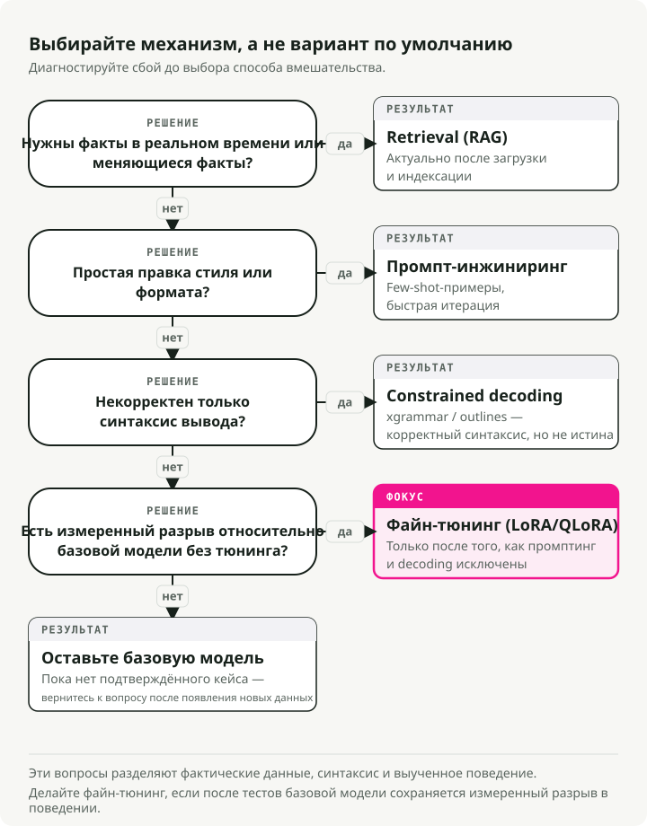
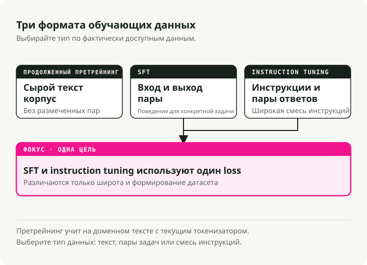
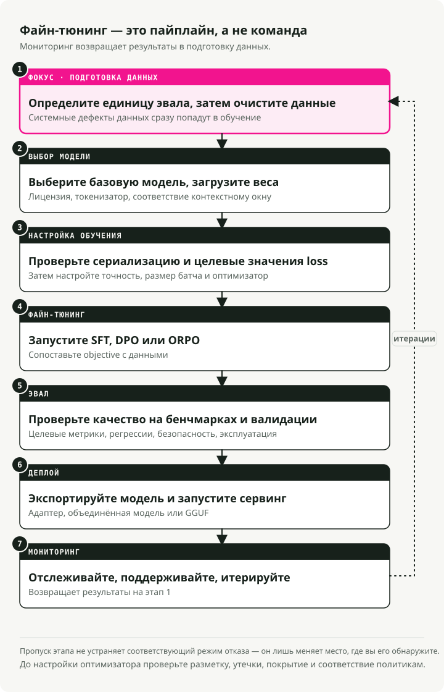
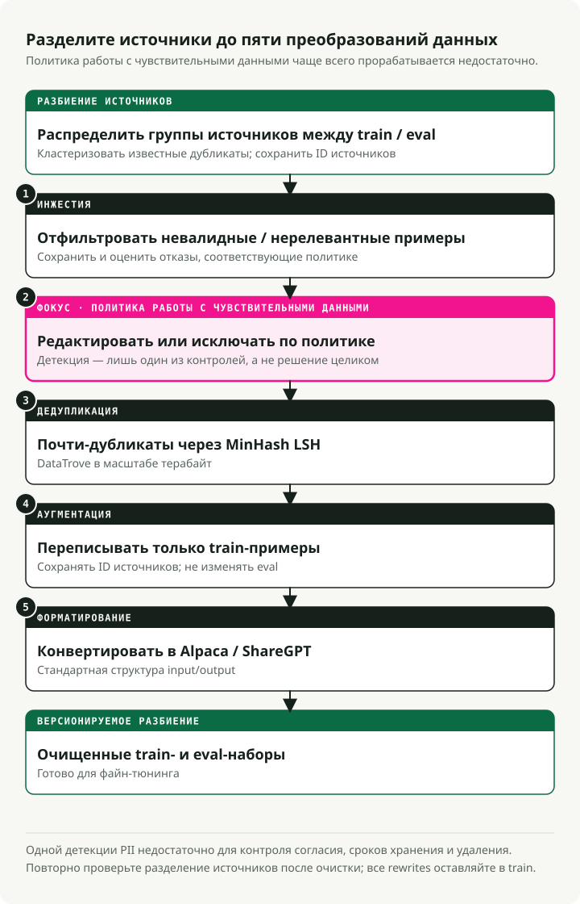
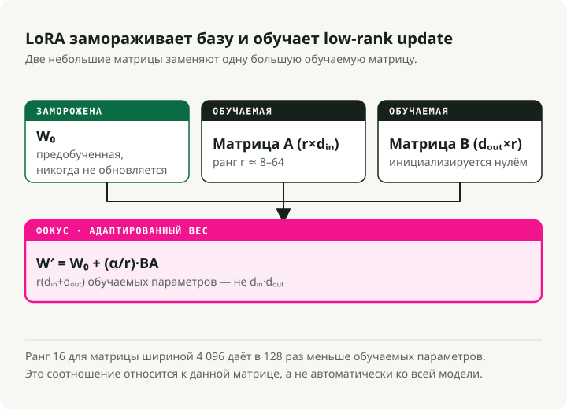
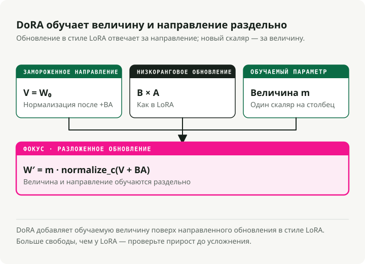
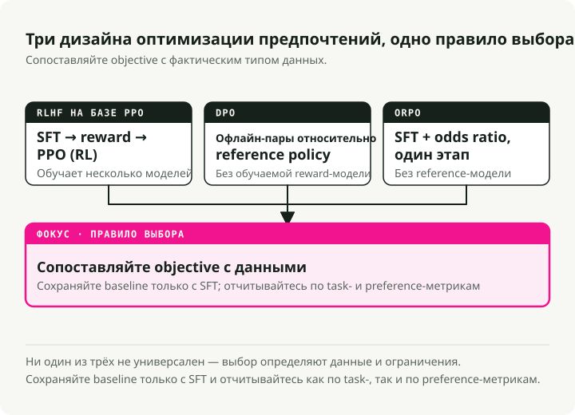
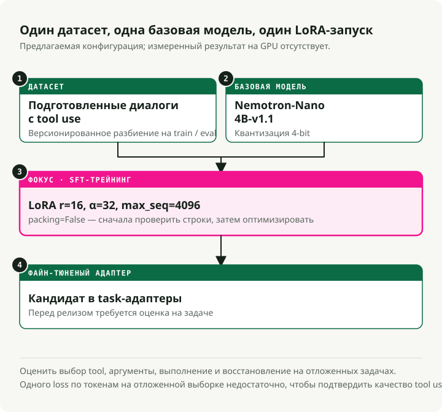
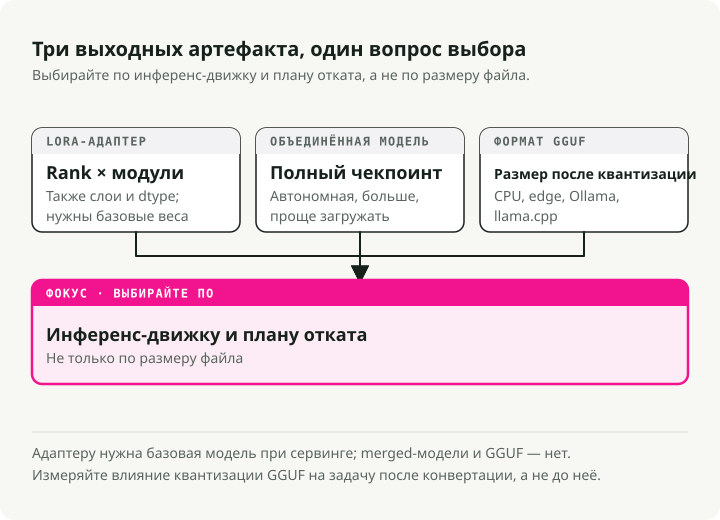

Автоматический перевод
Эта статья была автоматически переведена с оригинальной английской версии.
Руководство по fine-tuning LLM: LoRA, QLoRA, DoRA, Unsloth, Axolotl и deployment
Большинство проектов по fine-tuning, которые я видел, проваливаются не на этапе обучения, а на шагах до и после него: плохие данные, неверно выбранная базовая модель, отсутствие нормальной eval. Само обучение — как раз самая простая часть. Это руководство — то, что я хотел бы иметь до своего первого серьезного fine-tune: когда его делать, когда не делать, какие методы работают сегодня (LoRA, QLoRA, DoRA, ORPO) и как довести модель от ноутбука до serving endpoint.
Стоит ли вообще делать fine-tuning?
Прежде чем тратить GPU-часы, решите, действительно ли fine-tuning — правильный инструмент для вашей задачи.

Fine-tuning vs RAG
Не делайте fine-tuning только ради добавления «знаний». Вместо этого используйте такое разделение:
| Feature | Fine-Tuning | RAG (Retrieval-Augmented Generation) |
|---|---|---|
| Core Function | Меняет внутренние веса, чтобы обучить навыкам, стилям или поведению | Подставляет внешний, актуальный контекст на этапе inference |
| Best For | • Специфические разговорные стили • Следование сложным инструкциям • Предметно-специфичное рассуждение |
• Быстро меняющиеся данные (новости, цены акций) • Снижение галлюцинаций (grounding) • Цитирование источников |
| Knowledge Handling | Усваивает паттерны, а не факты | Извлекает факты из внешней базы знаний |
| Update Frequency | Для обновлений требуется переобучение | Обновляется сразу при добавлении новых документов |
Fine-tuning vs prompt engineering
Современные LLM очень хорошо реагируют на качественно составленные prompts. Прежде чем переходить к fine-tuning, выжмите максимум из prompting.
| Aspect | Fine-Tuning | Prompt Engineering |
|---|---|---|
| Setup Cost | Высокая (подготовка данных, GPU compute, итерации) | Низкая (итеративная доработка prompts) |
| Flexibility | Зафиксирован после обучения | Можно менять в любой момент без переобучения |
| Format/Style | Лучше подходит для сложных и стабильных выходных форматов | Хорошо подходит для простого форматирования с few-shot примерами |
| Latency | Ниже (не нужны длинные system prompts) | Выше (налог контекста в каждом запросе) |
| Best For | Сложное поведение, дистилляция, экономия на масштабе | Быстрые итерации, меняющиеся требования |
[!TIP] Сначала попробуйте prompting Начните с few-shot примеров в prompt. Если поведение все еще нестабильно, попробуйте SGR, прежде чем переходить к fine-tuning.
Fine-tuning vs Schema-Guided Reasoning (SGR)
Библиотеки вроде xgrammar и outlines ограничивают выход модели на этапе inference с помощью конечных автоматов. Они работают с базовыми моделями из коробки и не требуют обучения.
Ценность SGR не только в структурированном выводе. Главное — консистентность: одна и та же форма входа каждый раз дает одну и ту же форму выхода, без какого-либо переобучения. Когда одного prompting недостаточно и результаты плавают, SGR фиксирует паттерн вывода на этапе decode.
| Aspect | SGR (No Fine-Tuning) | Fine-Tuning |
|---|---|---|
| Setup | Сразу доступен — задаете схему и деплоите | Требует подготовки данных, GPU compute, итераций |
| Consistency | Гарантированная структура, надежные паттерны | Выученное поведение (все равно может варьироваться) |
| Flexibility | Схему можно менять в любой момент без переобучения | Зафиксирован после обучения |
| Latency | Небольшой overhead (модель может «сопротивляться» схеме) | Ниже (модель естественно выдает нужный формат) |
| Best For | Структурированный вывод, консистентное поведение | Сложное рассуждение, глубокие изменения поведения |
Практический порядок такой:
- Начните с prompting и few-shot примеров для базового форматирования.
- Добавьте SGR (
xgrammarилиoutlines), если формат получается нестабильным. - Переходите к fine-tuning только тогда, когда нужны изменения поведения, которые невозможно навязать схемой.
Быстрая шпаргалка: какие задачи чем решать
| Challenge | Best Solution | Why? |
|---|---|---|
| Missing knowledge | RAG | Модели галлюцинируют факты. Retrieval дает привязанный к источникам, актуальный контекст |
| Wrong format/tone | Prompt Engineering | Современные модели хорошо следуют стилевым инструкциям через few-shot примеры |
| Inconsistent outputs | SGR (xgrammar) | Гарантированная структура и надежность без обучения |
| Complex behavioral changes | Fine-Tuning (SFT) | Глубокая персона, паттерны рассуждения или многошаговые workflow |
| Safety/preference | Alignment (DPO) | Когда ответы формально верны, но не соответствуют предпочтениям |
| Latency/cost at scale | Distillation (SFT) | Обучение меньшей student-модели на выходах более крупной teacher-модели |
| Reduce model size | Quantization | Без обучения — сжатие весов (FP16→INT4) для более быстрого inference |
Когда математика действительно сходится
Fine-tuning окупается, когда трафик высокий, а требования стабильны. Хорошо настроенный RAG часто тащит в каждом вызове около 2,000 токенов контекста: system prompt, извлеченные документы, few-shot примеры. Это налог контекста, который вы платите в каждом запросе.
Fine-tuned модель переносит большую часть этих инструкций в свои веса, поэтому prompt сокращается примерно с ~2,000 токенов до ~50. При достаточном объеме запросов это может окупить compute на обучение за несколько недель.
[!TIP] Гибридная схема Паттерн, который я постоянно вижу в production: fine-tuned 8B модель в паре с небольшим RAG-retriever для фактов. Часто это лучше, чем prompted 70B+ модель, и по качеству, и по стоимости.
Типы fine-tuning
Есть три основные формы fine-tuning. Они отличаются тем, какие данные им нужны и чему именно они учат модель.

1. Continued pre-training (unsupervised)
Вы обучаете базовую модель на дополнительном сыром тексте без разметки. Она продолжает делать next-token prediction, как и на исходном этапе pre-training.
Когда это использовать:
- В домене есть словарь, которого базовая модель никогда не видела (medical, legal, внутренние codebase).
- У вас много доменного текста, но нет размеченных пар (input, output).
- Базовая модель плохо справляется с доменной терминологией.
Пример: обучение на миллионах клинических заметок, чтобы модель усвоила медицинские сокращения, названия препаратов и клинические workflow.
2. Supervised fine-tuning (SFT)
SFT обучается на размеченных парах (input, output). Вы показываете модели точный output, который хотите получить для каждого input.
Когда это использовать:
- У вас есть конкретная задача с чистым форматом input/output.
- У вас есть качественные размеченные данные, даже если их немного.
- Вам нужно предсказуемое поведение на известной форме входа.
Пример: обучение на парах (описание SQL-запроса, SQL code) для text-to-SQL.
{
"input": "Get all users who signed up last month",
"output": "SELECT * FROM users WHERE signup_date >= DATE_SUB(NOW(), INTERVAL 1 MONTH)"
}
3. Instruction tuning
Instruction tuning — частный случай SFT, нацеленный на то, чтобы модель следовала широкому набору инструкций на естественном языке. Данные обучения — это пары (instruction, response) по множеству разных задач.
Когда это использовать:
- Вы хотите general-purpose assistant (как ChatGPT или Claude).
- Модель должна обрабатывать разнообразные, открытые запросы.
- Вы строите chat-интерфейс.
Пример: обучение на тысячах разных инструкций вроде «Summarize this article», «Write a poem about X», «Explain Y in simple terms».
Сравнение
| Aspect | Continued Pre-training | SFT | Instruction Tuning |
|---|---|---|---|
| Data | Сырой текст | Пары (input, output) | Пары (instruction, response) |
| Labels | Нет (unsupervised) | Под конкретную задачу | Разнообразные задачи |
| Goal | Доменное знание | Поведение под конкретную задачу | Следование любым инструкциям |
| Data Volume | Большой (миллионы токенов) | Малый–средний (500-10k примеров) | Средний–большой (10k-100k примеров) |
[!NOTE] Что люди делают на практике Большинство практиков используют SFT для конкретных задач и instruction tuning для chat-assistant систем. Continued pre-training встречается реже, потому что требует огромных объемов доменного текста и большого compute.
7-этапный pipeline fine-tuning
Fine-tuning — это pipeline, а не одна команда. У каждого этапа есть свои точки отказа, и пропуск любого из них обычно проявляется позже в виде плохой модели.

Каждый этап опирается на предыдущий:
- Data preparation — очистка, дедупликация и форматирование данных (этап с максимальным влиянием)
- Model selection — выбор правильной базовой модели и загрузка весов
- Training setup — настройка hardware, hyperparameters и стратегии оптимизации
- Fine-tuning — запуск обучения SFT, DPO или ORPO
- Evaluation — benchmark производительности и проверка качества
- Deployment — экспорт и serving модели
- Monitoring — отслеживание производительности, сопровождение и итерации
[!WARNING] Данные — это фундамент Этап 1 (data preparation) дает наибольший эффект. Алгоритмы не исправят дефекты, на которых вы обучали модель. 500-1,000 тщательно отобранных примеров почти всегда лучше, чем 50,000 шумных.
Этап 1: Подготовка данных
Большинство проектов по fine-tuning проваливаются именно здесь, а не на обучении. Современная подготовка данных — это больше, чем просто прогнать regex по CSV.

5-этапный pipeline данных
Команды, которые занимаются этим всерьез, опираются на инструменты вроде DataTrove (Hugging Face) и Distilabel (Argilla), а не на самописные скрипты.
1. Ingestion и filtering
- Action: удалить отказы («I cannot answer that»), сломанный UTF-8 и языки вне целевого.
- Tools: Trafilatura для extraction, FastText для language ID.
2. Очистка PII (обязательно для enterprise)
- Action: обнаруживать и редактировать email, IP-адреса и номера телефонов до обучения.
- Tools: Microsoft Presidio или scrubadub.
- Why: обучение на клиентских PII — это инцидент безопасности, который просто ждет своего часа.
3. Дедупликация (MinHash LSH)
- Action: удалять near-duplicates, чтобы модель их не заучивала.
- Tools: DataTrove хорошо справляется с обработкой на terabyte-scale.
4. Synthetic augmentation
- Action: использовать более сильную teacher-модель (GPT-4o, DeepSeek-V3), чтобы переписать сырые данные в чистые пары instruction-response.
- Tools: Distilabel.
- Why it matters: именно здесь обычно приходит самый большой прирост качества.
5. Formatting
- Action: привести данные к стандартному формату (Alpaca или ShareGPT).
Примеры форматов данных
Формат Alpaca (instruction-following):
{
"instruction": "Summarize the following text.",
"input": "The text to be summarized...",
"output": "This is the summary."
}
Формат ShareGPT/ChatML (диалоговый):
{
"conversations": [
{ "from": "user", "value": "Hello, who are you?" },
{ "from": "assistant", "value": "I am a helpful AI assistant." }
]
}
Что действительно важно
- Качество важнее количества. 500-1,000 тщательно отобранных примеров лучше, чем 50,000 шумных.
- Чистота. Удаляйте нерелевантный текст, нормализуйте пробелы, держите формат единообразным.
- Баланс. Распределяйте покрытие по темам, чтобы модель не переобучилась на доминирующий сегмент.
- Очистка PII обязательна для любой production-системы.
Этап 2: Выбор модели и hardware
Выбор базовой модели и понимание минимального уровня GPU определяют, что вы вообще сможете обучать.
Hardware по размеру модели
Память — жесткое ограничение снизу. Числа ниже относятся к обучению, а не inference.
| Tier | Hardware Config | Capability | Use Case |
|---|---|---|---|
| Enterprise Standard | 8x NVIDIA H100 (80GB) | Full Fine-Tuning | Обучение 70B моделей с длинным контекстом (32k+) на максимальной скорости |
| Minimum Viable (Pro) | 4x NVIDIA A100 (80GB) | QLoRA / LoRA | Fine-tuning Qwen 72B или Llama 70B в 4-bit |
| Local R&D | 4x RTX 6000 Ada (48GB) | QLoRA | On-prem workstation для требований по приватности данных |
| Hobbyist/Indie | 1-2x RTX 3090/4090 (24GB) | QLoRA | Fine-tuning 7B-32B моделей параметрически-эффективными методами |
[!TIP] Потребительские GPU могут больше, чем кажется С QLoRA и Unsloth одна RTX 4090 (24GB) может fine-tune модели до 32B параметров. RTX 3090 все еще вполне подходит для обучения 7B-13B. Уровня в 24GB VRAM хватает для большинства серьезных задач вне long-context сценариев.
[!NOTE] Почему H100 Главная причина не в VRAM, а в FP8 precision. H100 поддерживают нативное обучение в FP8, что примерно удваивает эффективную память и throughput по сравнению с A100. Для контекстов 128k токенов FP8 на H100 часто — единственный способ уместить разумный batch size.
Математика памяти
Чтобы fine-tune 72B модель, GPU должен держать:
- Веса модели в 16-bit precision: ~144 GB.
- Градиенты и optimizer state: примерно 2-3× от размера модели в зависимости от optimizer (AdamW ближе к верхней границе).
- Activations: растут с длиной контекста, например 32k токенов.
Именно поэтому QLoRA (4-bit base + LoRA adapters) — практический default для большинства команд.
Этап 3: Методы обучения (PEFT и LoRA)
Full fine-tuning vs PEFT
Full fine-tuning (FFT) обновляет каждый вес. 7B модель в 16-bit precision требует около 112GB VRAM только на обучение. Для большинства команд это недостижимо.
Parameter-efficient fine-tuning (PEFT) обучает лишь небольшое подмножество параметров, а остальные замораживает. Математика сразу становится гораздо мягче.
LoRA: основной default
LoRA (Low-Rank Adaptation) — техника PEFT, которую стоит изучить первой. Ее ключевая идея: изменения весов, которые реально нужны при fine-tuning, имеют низкий «intrinsic rank», поэтому полные rank-обновления не нужны.

Вместо обновления полной матрицы весов W (d × d), LoRA обучает две меньшие матрицы:
- A (d × r) — down-projection
- B (r × d) — up-projection
Обновление выглядит как ΔW = B × A.
При rank r=16 это сокращает число обучаемых параметров примерно в 10,000 раз, уменьшая VRAM со 120GB до 16GB.
Сравнение методов PEFT
| Method | How It Works | Memory Savings | Best For |
|---|---|---|---|
| LoRA | Низкоранговые матрицы, внедренные в замороженные веса | ~10x | Общий fine-tuning |
| QLoRA | LoRA + 4-bit quantization базовой модели | ~20x | Потребительские GPU (16-24GB) |
| DoRA | LoRA с разложением на magnitude/direction | ~10x | Когда LoRA упирается в потолок качества |
| HFT | Замораживает половину параметров на каждый раунд обучения | ~2x | Компромисс между FFT и PEFT |
Когда что выбирать
- LoRA: начинайте с него. Быстро, экономно по памяти, хорошо поддерживается.
- QLoRA: когда хотите fine-tune 70B модель на consumer GPU.
- DoRA: когда проявляется потолок качества LoRA, особенно на более сложных reasoning-задачах.
- HFT: когда LoRA уже недостаточно, а full fine-tuning слишком дорог.
DoRA: LoRA с декомпозицией весов
DoRA (Weight-Decomposed Low-Rank Adaptation) разделяет каждый pre-trained вес на magnitude и direction и обучает их отдельно. Обычно это закрывает большую часть разрыва между LoRA и full fine-tuning.

Как это работает:
Вместо того чтобы рассматривать веса как единое целое, DoRA разбивает pre-trained веса на два компонента:
- Magnitude — обучаемый scalar на каждый столбец, который управляет «силой».
- Direction — обновляется через матрицы LoRA и определяет «что именно».
Обновление выглядит так: W' = m × (V + B × A), где:
m= magnitude (trainable)V= direction (W / ||W||)B × A= обновление LoRA для direction
Что дает эта дополнительная структура:
- Более богатые обновления параметров без потери эффективности.
- Качество ближе к full fine-tuning.
- Те же ~10× экономии памяти, что и у LoRA.
- Особенно заметно на более сложных reasoning-задачах.
Half fine-tuning (HFT)
HFT занимает промежуточное положение между full fine-tuning и методами PEFT:
- Method: на каждом раунде половина параметров модели замораживается, а другая половина обновляется.
- Strategy: какая именно половина замораживается, меняется от раунда к раунду.
- Why it works: замороженная половина сохраняет прежние знания, а активная учит новое поведение.
- Когда использовать: когда LoRA не дотягивает, но full fine-tuning вам не по бюджету.
Слияние adapters для multi-task learning
Вместо fine-tuning одной монолитной модели под несколько задач обучайте отдельный небольшой adapter под каждую задачу и держите базовую модель замороженной. Затем adapters можно сливать на этапе serving.
Распространенные методы слияния:
- Concatenation — объединение параметров adapters с увеличением эффективного rank. Быстро и просто.
- Linear combination — взвешенная сумма adapters. Дает управляемость.
- SVD — матричное разложение для merge. Гибче, но медленнее.
Пример: один adapter для summarization, другой для translation, затем их merge в единую multi-task модель.
Этап 4: Fine-tuning и alignment предпочтений
Иногда SFT дает правильный ответ, но в неправильном стиле: слишком многословно, не в том тоне, иногда небезопасно. Preference alignment как раз это и исправляет.

RLHF с PPO (старый подход)
Изначальный recipe был трехэтапным:
- SFT — выучить задачу.
- Reward model — обучить на человеческих предпочтениях (chosen vs rejected).
- PPO (Proximal Policy Optimization) — reinforcement learning для оптимизации policy.
Проблемы этого подхода:
- Сложно реализовывать и поддерживать.
- Дорого — нужно обучать несколько моделей.
- Чувствителен к hyperparameters и склонен к нестабильному обучению.
DPO (более простой преемник)
DPO (Direct Preference Optimization) убирает явную reward model и RL loop. При этом он все равно оптимизирует objective RLHF (максимизацию reward с ограничением по KL-divergence), но делает это как переформулированную задачу supervised learning, а не через reinforcement learning:
{
"prompt": "Explain quantum computing",
"chosen": "Quantum computing uses qubits...", # Preferred response
"rejected": "Well, it's complicated..." # Non-preferred response
}
Что вы получаете:
- Более простой code path (без отдельной reward model и без RL loop).
- Более стабильное обучение, потому что это обычное supervised learning.
- Меньше compute cost.
DPO выиграл большую часть практической борьбы, но PPO полностью не ушел:
- DPO в некоторых конфигурациях может давать biased solutions.
- Хорошо настроенный PPO все еще дает state-of-the-art результаты на более сложных задачах, например code generation.
- Явный reward signal в PPO дает более тонкое управление для специализированных задач.
Если вы начинаете сегодня с нуля, сначала стоит брать DPO (или ORPO ниже) и переходить к PPO только если на это есть реальная причина.
ORPO (single-stage)
ORPO (Odds-Ratio Preference Optimization) объединяет SFT и preference alignment в один training run. Для большинства команд это сильное упрощение.
Как это работает: ORPO использует комбинированный loss, который одновременно делает две вещи:
- Максимизирует likelihood выбранного ответа (обучение задаче).
- Штрафует отклоненный ответ через odds-ratio term (обучение предпочтениям).
Полезные hyperparameters:
from trl import ORPOConfig
config = ORPOConfig(
learning_rate=8e-6, # Very low, as recommended by the ORPO paper
beta=0.1, # Controls strength of preference penalty
# ... other params
)
- Learning rate: держите очень низким (8e-6 в статье про ORPO).
- Beta: контролирует силу preference penalty (0.1 — типичное значение).
Что дает ORPO:
- Один этап обучения вместо двух.
- Без reward model.
- Меньше hyperparameters, чем у DPO.
- Самый короткий путь от сырой модели до aligned-модели.
Когда что выбирать:
- ORPO: default для большинства сценариев.
- DPO: когда нужен больший контроль над alignment.
- PPO: когда нужен явный reward signal, например для code generation.
Фреймворки для fine-tuning
Экосистема стабилизировалась вокруг четырех основных инструментов.
Unsloth — скорость и эффективность по памяти
Unsloth оборачивает HuggingFace trl и transformers и добавляет поверх слой оптимизаций:
- Кастомные Triton GPU kernels для attention, RoPE и cross-entropy, которые обходят overhead PyTorch.
- Memory-efficient backprop, который пересчитывает activations на backward pass вместо хранения их в памяти.
- Fused operations, объединяющие несколько шагов (layer norm + linear и т.п.) в одиночные GPU-вызовы.
- 4-bit quantization, встроенную прямо в путь QLoRA с оптимизированной dequantization.
[!IMPORTANT] Порядок import важен Unsloth патчит пакеты HuggingFace во время import. Импортируйте и инициализируйте
FastLanguageModelизunslothдо того, как импортируете что-либо изtrlилиtransformers, иначе патчи не применятся.
# ✅ Correct order
from unsloth import FastLanguageModel # Must be first!
from trl import SFTTrainer
from transformers import TrainingArguments
# ❌ Wrong order - will fail
from trl import SFTTrainer
from unsloth import FastLanguageModel # Too late!
Best for: single-GPU обучение, prototyping, Colab notebooks, все, кто следит за GPU bill.
Главный выигрыш: эти кастомные Triton kernels делают его в 2-5× быстрее стандартного пути HuggingFace.
Axolotl — production через config-first
# config.yaml - no code required
base_model: meta-llama/Meta-Llama-3-8B
adapter: qlora
lora_r: 32
lora_alpha: 16
datasets:
- path: data/my_data.jsonl
type: alpaca
sample_packing: true
Запуск: accelerate launch -m axolotl.cli.train config.yaml
Best for: production pipeline, multi-GPU кластеры, воспроизводимые эксперименты.
Главный выигрыш: configs — это YAML-файлы, а значит, их удобно version-control'ить и делиться ими.
Сравнение фреймворков
| Feature | Unsloth | Axolotl | TRL | Torchtune |
|---|---|---|---|---|
| Strength | Скорость и эффективность | Масштаб на multi-GPU | Экосистема | Нативный PyTorch |
| Speed | Самый быстрый (2-5x) | Высокая | Средняя | Высокая |
| Multi-GPU | Развивается | Отлично | Хорошо | Отлично |
| Config | Python | YAML | Python | Python |
| Best for | Local/Colab | Кластеры | Research | Сторонники чистого PyTorch |
Практическое демо: fine-tuning с Unsloth
Вот полный пример из моего репозитория unsloth-finetune-demo. В демо выполняется fine-tuning Nemotron-Nano для function calling.

Быстрый старт
# Clone and setup
git clone https://github.com/slavadubrov/unsloth-finetune-demo.git
cd unsloth-finetune-demo
# Install with uv (recommended)
uv sync
# Run fine-tuning (quick test)
uv run finetune --max-samples 1000
Конфигурация
Самое интересное находится в config.py:
# Model & Dataset
MODEL_NAME = "nvidia/Llama-3.1-Nemotron-Nano-4B-v1.1" # 4B params, 128K context
DATASET_NAME = "glaiveai/glaive-function-calling-v2" # 113K examples
# LoRA Configuration
LORA_R = 16 # Rank - higher = smarter but more VRAM
LORA_ALPHA = 32 # Scaling factor - usually 2x LORA_R
MAX_SEQ_LENGTH = 4096
# Target all linear layers for best quality
LORA_TARGET_MODULES = [
"q_proj", "k_proj", "v_proj", "o_proj",
"gate_proj", "up_proj", "down_proj",
]
[!NOTE] Отношение alpha к rank Популярное практическое правило: задавать alpha = 2 × rank (например, rank=16, alpha=32). Это дает более сильные обновления весов без дестабилизации обучения.
Основной training code
from unsloth import FastLanguageModel
from trl import SFTTrainer
from transformers import TrainingArguments
# Load model with 4-bit quantization
model, tokenizer = FastLanguageModel.from_pretrained(
model_name="nvidia/Llama-3.1-Nemotron-Nano-4B-v1.1",
max_seq_length=4096,
load_in_4bit=True,
)
# Add LoRA adapters
model = FastLanguageModel.get_peft_model(
model,
r=16,
lora_alpha=32,
target_modules=["q_proj", "k_proj", "v_proj", "o_proj",
"gate_proj", "up_proj", "down_proj"],
use_gradient_checkpointing="unsloth", # Big memory savings
)
# Train with SFTTrainer
trainer = SFTTrainer(
model=model,
tokenizer=tokenizer,
train_dataset=dataset,
max_seq_length=4096,
packing=True, # Key for efficiency!
args=TrainingArguments(
per_device_train_batch_size=2,
gradient_accumulation_steps=4,
learning_rate=2e-4,
num_train_epochs=3,
bf16=True,
),
)
trainer.train()
Fine-tuning с Axolotl
[!NOTE] Демо скоро будет Я работаю над практическим демо по Axolotl. До тех пор хорошей отправной точкой будет Accelerate n-D Parallelism Guide от Hugging Face по стратегиям multi-GPU обучения.
Для production и multi-GPU setup'ов config-first подход Axolotl делает workflow воспроизводимым:
# axolotl_config.yaml
base_model: meta-llama/Meta-Llama-3-8B
model_type: LlamaForCausalLM
# QLoRA configuration
load_in_4bit: true
adapter: qlora
lora_r: 32
lora_alpha: 16
lora_dropout: 0.05
lora_target_modules:
- q_proj
- k_proj
- v_proj
- o_proj
- gate_proj
- up_proj
- down_proj
# Dataset
datasets:
- path: data/training_data.jsonl
type: alpaca
# Training settings
sequence_len: 4096
sample_packing: true # Critical for speed!
micro_batch_size: 2
gradient_accumulation_steps: 4
learning_rate: 0.0002
num_epochs: 3
# Hardware
bf16: true
flash_attention: true
Запуск обучения:
accelerate launch -m axolotl.cli.train axolotl_config.yaml
Этап 5: Evaluation
Обучение — простая часть. Гораздо сложнее понять, стала ли модель реально лучше, и этот ответ нужен до выхода в production.
Автоматизированные benchmarks
Используйте lm-evaluation-harness для стандартизированного тестирования:
lm_eval --model hf \
--model_args pretrained=./outputs/merged-model \
--tasks hellaswag,arc_easy,mmlu \
--batch_size 8
LLM-as-judge
Для субъективного качества можно поручить более крупной модели оценивать outputs:
judge_prompt = """
Rate this response from 1-5 on:
- Relevance
- Accuracy
- Formatting
Response: {model_output}
Expected: {ground_truth}
"""
Доменная eval
Отложите test set из реальных примеров вашего настоящего use case. Именно эта eval и имеет значение. Общие benchmarks не скажут вам, работает ли ваша модель для function calling.
Этап 6: Deployment и форматы вывода
После обучения у вас есть три способа экспортировать модель:

1. LoRA adapter (default)
uv run finetune # Saves ~100-500MB adapter
- Size: ~100-500 MB.
- Best for: разработка, тестирование, несколько adapters на одной базовой модели.
- Bonus: можно менять adapters без повторной загрузки базовой модели.
2. Merged model
uv run finetune --merge # Creates standalone ~8-16GB model
- Size: ~8-16 GB (полные 16-bit веса).
- Best for: публикация на HuggingFace, serving через vLLM, простой deployment.
- Trade-off: артефакт больше, но нет зависимости от отдельной базовой модели.
3. Формат GGUF
uv run finetune --gguf q4_k_m # Creates ~2-4GB quantized model
- Size: ~2-4 GB (quantization Q4_K_M).
- Best for: CPU inference, Ollama, llama.cpp, edge deployment.
- Options:
q4_k_m(сбалансированный),q5_k_m(выше качество),q8_0(почти без потерь).
Этап 7: Serving и monitoring
С vLLM (production)
# Requires merged model format
vllm serve ./outputs/unsloth-nemotron-function-calling-merged \
--host 0.0.0.0 \
--port 8000 \
--max-model-len 4096
Запрос через OpenAI-compatible API:
from openai import OpenAI
client = OpenAI(base_url="http://localhost:8000/v1", api_key="dummy")
response = client.chat.completions.create(
model="unsloth-nemotron-function-calling-merged",
messages=[{"role": "user", "content": "Book a flight to Tokyo"}]
)
С Ollama (local)
# Create Modelfile
echo 'FROM ./outputs/unsloth-nemotron-function-calling-gguf/model-q4_k_m.gguf' > Modelfile
# Import to Ollama
ollama create my-function-model -f Modelfile
# Run
ollama run my-function-model
С llama.cpp (CPU)
./main -m ./outputs/model-q4_k_m.gguf \
-p "What's the weather in Tokyo?" \
--ctx-size 4096
Ключевые выводы
- Проходите весь pipeline. Главный рычаг — это data preparation, а не само обучение.
- Не тянитесь к fine-tuning по умолчанию. Сначала попробуйте prompting, затем SGR, затем RAG. Fine-tuning нужен только если этого недостаточно.
- Относитесь к подготовке данных серьезно. Используйте современные pipeline (DataTrove, Distilabel) и очищайте PII до любого enterprise rollout.
- По умолчанию выбирайте QLoRA, если у вас не лежат без дела 8× H100. Именно так сегодня fine-tune'ят 70B модели на consumer или A100 hardware.
- Используйте ORPO для alignment. Одноэтапное обучение проще и обычно достаточно быстрое.
- Переходите к DoRA, когда LoRA упирается в потолок качества на более сложных reasoning-задачах.
- Включайте sample packing. Это самый большой выигрыш по времени обучения.
- Unsloth для прототипирования, Axolotl для production.
- Экспортируйте в GGUF, если целевой deployment — local или edge.
Ссылки
Papers & Research
- LoRA: Low-Rank Adaptation of Large Language Models
- QLoRA: Efficient Finetuning of Quantized LLMs
- DoRA: Weight-Decomposed Low-Rank Adaptation
- DPO: Direct Preference Optimization
- ORPO: Odds Ratio Preference Optimization
- PPO: Proximal Policy Optimization Algorithms — OpenAI, 2017
- HFT: Half Fine-Tuning for Large Language Models — Снижение catastrophic forgetting
Инструменты обработки данных
- DataTrove — обработка данных Hugging Face в масштабе
- Distilabel — генерация synthetic data (Argilla)
- Trafilatura — extraction и crawling веб-текста
- FastText — идентификация языка от Facebook AI (поддерживает 217 языков)
- Microsoft Presidio — обнаружение и анонимизация PII
- scrubadub — Python-библиотека для удаления PII
Schema-Guided Reasoning (SGR)
Фреймворки обучения
- Unsloth — чемпион по скорости и эффективности (2-5x быстрее)
- Axolotl — config-driven обучение на multi-GPU
- TRL (Transformer Reinforcement Learning) — RL-обучение от Hugging Face
- Torchtune — нативная для PyTorch библиотека fine-tuning
Inference & Deployment
- vLLM — движок serving LLM с высокой пропускной способностью
- Ollama — локальный LLM runner для Mac/Windows/Linux
- llama.cpp — CPU/GPU inference с форматом GGUF
Evaluation
- lm-evaluation-harness — стандартизированный benchmarking LLM от EleutherAI
Guides & Resources
- Demo Repository — практический пример fine-tuning
- LLM Fine-Tuning. Theoretical Intuition and Practical Implementation — исследовательский notebook NotebookLM
- Accelerate n-D Parallelism Guide — стратегии multi-GPU обучения от Hugging Face